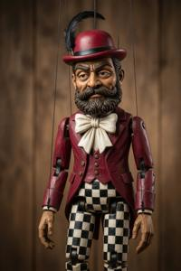
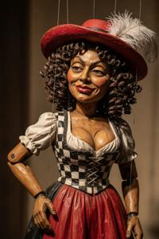
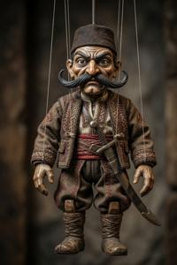
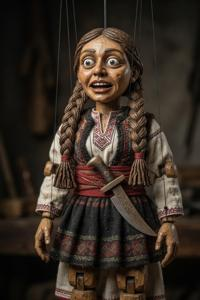

Згуро-деглянские культурные различия
Самое тяжкое оскорбление, какое можно нанести згурцу или деглянину, — сказать, что оба народа, в сущности, не различаются: у них общий язык, общая религия, общая материальная культура и неотличимая внешность. Это утверждение объективно верно, но именно оно считается у обоих народов кровной обидой. Каждая нация настаивает, что именно она — единственная подлинная наследница паннонской славянской традиции и истинная преемница Великой Моравии. Другую же сторону неизменно объявляют горными варварами неизвестного происхождения, присвоившими чужой язык и чужое наследие. Ни одно из этих утверждений не подтверждается историческими источниками.
Происхождение згуро-деглянского раскола
Подозрительны уже сами этнонимы. «Згурец» и «деглянин» — слова не славянского происхождения и не встречаются ни в одном документе ранее середины XVIII века: лакуна удивительная для региона с непрерывной многовековой письменной традицией.
Наиболее правдоподобная версия реконструируется по австрийским военным архивам. В конце XVII века в кампаниях Евгения Савойского против османов участвовали два итальянских наёмника — неаполитанец Кандидо Сгуро (Sguro) и генуэзец Массимо Дельяно (Degliano). Они набрали по роте славяноязычных иррегуляров и командовали ими на службе у Габсбургов. Это подтверждается достоверными австрийскими документами. Что произошло дальше, приходится реконструировать по косвенным данным.
После войны этих наёмников расселили в качестве граничар — пограничной стражи — вдоль верхнепаннонского участка новой военной границы. За подразделениями закрепились имена их командиров. Со временем имена превратились в этнонимы. Пограничные солдаты пользовались более высоким статусом, чем окрестное крестьянство, и сами названия несли определённый престиж, поэтому местные паннонскоязычные крестьяне постепенно начали присваивать их и себе.
К середине XVIII века в австрийской военной переписке фигурируют «згурские гусары» и «деглянские гайдуки» как отдельные воинские части с определёнными районами комплектования. К началу XIX века славянизированные формы обоих названий — «згурцы» на северо-западе и «дегляне» на юго-востоке — вошли в словарь этнических самоопределений. Чёткой границы между двумя группами никогда не было: они были тесно перемешаны по всей паннонской внутренней территории, а семейные связи, общие приходы и общие рынки смешивали их в общность поверх границы, которую пытались провести тогдашние этнографы.
Вывод напрашивается: згуро-деглянский раскол — явление недавнее и по сути случайное. Он не отражал ранее существовавшие этнокультурные различия, а породил их. Две общины не отличались практически ничем, кроме названий, — а когда эти названия стали политическим фактором, у обеих появились веские причины изобретать как можно больше отличительных признаков. Происхождение дегляно-згурской вражды рассматривается в отдельной статье. Здесь достаточно отметить, что именно скудость исходных различий заставила предпринимать чрезвычайные усилия по их утверждению.
Табу
Различия между двумя культурами реальны в том смысле, что люди последовательно руководствуются ими на практике. Но они не реальны в том смысле, что не отражают никаких глубоких исторических расхождений. Начиная с позднего социалистического периода обе народности прилагают немалые усилия, чтобы выявлять, развивать, а где нужно — и попросту изобретать отличительные признаки, не унаследованные ими из прошлого.
Цвета
Самое заметное и всепроникающее различие происходит от соперничества футбольных клубов. Згурский клуб «Сокол» играет в красно-белой форме. Деглянский клуб «Динамо» играет в сине-белой. Отсюда выросла целая система цветовых запретов, давно перешагнувшая границы стадиона и проникшая во все уголки повседневной жизни.
Для згурца сочетание синего и белого — клеймо врага. Сами по себе эти цвета ничем не примечательны, оскорбительно именно их сочетание. Запрет распространился с одежды на упаковку, на интерфейсы гаджетов, на расцветку бытовых предметов. В табуированный список входят Facebook, Telegram, Nivea, печенье Oreo и — самый колоритный пример — смурфики, персонажи бельгийской франшизы, маленькие синие человечки в белых колпачках. Они дали название одному из самых ходовых (и безобидных) згурских оскорблений для деглян — смурфы.
Заметное исключение из этого сине-белого чёрного списка — BMW. Исключены и джинсы, чей голубой или синий цвет воспринимается как нейтральный. Сочетание синих джинсов и белой футболки вполне приемлемо, а вот если с той же футболкой надеть синие спортивные штаны, это воспримут совсем иначе.
Для деглянина табуировано сочетание красного и белого. В табуированный список входят Coca-Cola, Nintendo и Colgate — все узнаваемые по красно-белой фирменной расцветке. В деглянском доме этих товаров, как правило, не найти. Официально они не запрещены, но в Деглянской Республике их просто нигде не купишь.
Труднее избежать Adobe и YouTube — оба с красно-белой фирменной расцветкой. Существуют сторонние утилиты, перекрашивающие значки PDF в сине-белые из стандартных красно-белых. Мобильное приложение YouBlube, целиком перекрашивающее интерфейс YouTube, входит в число самых скачиваемых в деглянской зоне; его неоднократно удаляли из Google Play Store, но оно продолжает распространяться по неофициальным каналам.
Напитки
Отдельно от футбольных табу, и, возможно, древнее их, стоит вопрос ракии. Згурцы пьют сливовицу, дегляне — грушевицу. Историческое происхождение этого раскола неизвестно: оно фигурирует уже в самых ранних этнографических описаниях обеих народностей, и его нельзя возвести к какому-то конкретному событию. Если згурец пьёт грушевицу, это воспринимается как культурное высказывание — как правило, враждебное. Деглянин, которому на свадьбе предложат сливовицу, найдёт любой правдоподобный предлог отказаться.
На смешанных мероприятиях — а они случаются чаще, чем готова признать любая из сторон, — стандартное решение таково: выставить оба напитка с чёткими подписями на отдельных столах в противоположных концах зала. Хозяин, который просто выставит всё имеющееся в доме, вряд ли вспомнит этот вечер с удовольствием.
У субкультур седмаков и спремников система табу значительно сложнее и соблюдается гораздо строже. Более подробное описание запретов на бренды у седмаков и спремников приведено в соответствующих статьях. Здесь достаточно отметить, что для обеих субкультур цветовые запреты — не общественная условность, а символ веры, и нарушения караются соответственно.
Общественное принуждение
Вопрос принуждения к соблюдению запретов осложняется устойчивой асимметрией: к чужакам и к своим относятся по-разному.
Иностранный турист, явившийся в сине-белом в згурский квартал или в красно-белом — в деглянский, нападению не подвергнется. Уже в нескольких шагах от границы квартала к нему подойдёт прохожий — как правило, пожилой, хотя и не обязательно, — и более или менее вежливо, но всегда очень ясно даст понять, что тот совершил ошибку. Такое замечание делают совершенно искренне, как своего рода общественную услугу.
Для человека заведомо из чужой народности тот же самый внешний вид значит совсем иное и вызывает совсем другую реакцию. Неправильные цвета в неправильном квартале читаются не как невежество, а как провокация. Социальные последствия могут варьировать от коллективного бойкота — обслужат в магазине последним, не встретят взглядом, такси не остановится — до прямой конфронтации. Физическое насилие не является нормой, но не так уж и редко.
Механизмы принуждения целиком неформальны. Ни одно учреждение не наделено полномочиями следить за цветовыми запретами. Здесь работает общественная память. Лавочник, продающий в згурской зоне сине-белую обёрточную бумагу, потеряет покупателей — и никто не объяснит ему, почему. Самый надёжный механизм принуждения — большая семья: молодого человека в одежде неправильной расцветки отчитает каждый родственник на ближайшем семейном празднике.
Стереотипы
{kind=link}

На вопрос, чем же всё-таки два народа по существу отличаются друг от друга, згурец ответит примерно так: «Мы, згурцы, более современные, городские, прогрессивные, европейские, образованные, динамичные, культурные, предприимчивые, да в конце концов, просто умные; тогда как дегляне — косные, упрямые, грубые, консервативные, отсталые, деревенские, балканские, дикие и просто тупые». Ответ деглянина будет зеркально симметричен: «Мы, дегляне — честные, открытые, добросердечные, близкие к природе, семейственные, патриотичные, справедливые, щедрые, искренние, порой простовато-наивные; тогда как згурцы — хитрые, лживые, изворотливые, лицемерные, бессовестные, развратные, надменные, своекорыстные, извращённые, алчные, эгоистичные и оторванные от корней».
{kind=link}

На первый взгляд может показаться, что такое противопоставление отражает взаимное восприятие горожан и крестьян, или равнинных жителей и горцев. Но история не подтверждает этой гипотезы. К концу XIX века, когда закрепилась эта взаимодополняющая пара стереотипов, большинство и згурцев и деглян были крестьянами с равнины; среди горожан и те и другие были представлены примерно поровну; среди горцев Нехожих Врехов преобладали дегляне, но были и згурцы.
{kind=link}

В действительности эти стереотипы берут начало в паннонском народном кукольном театре, ярмарочном балагане, где к концу XIX века сложились две пары устойчивых комических типажей: дегляне Дуек и Дуйка, и згурцы Зуек и Зуйка. Они изображались в узнаваемых костюмах и с именно такими характерами, какие знакомы нам по современным стереотипам: Дуек и Дуйка — диковатые простодушные горцы, Зуек и Зуйка — надменные горожане. Давая представления в разных частях страны, балаганщики, конечно, по-разному расставляли акценты. В спектаклях для згурской публики хитроумные и предприимчивые Зуек и Зуйка триумфально обводили вокруг пальца тупую горскую деревенщину; в спектаклях для публики деглянской Дуек и Дуйка со своим крестьянским здравым смыслом торжествовали над претенциозными, но ветреными и падкими на лесть горожанами. Зрители из обеих народностей охотно ассоциировали себя с побеждающей стороной, примеряли на себя её качества, и в конце концов сами начинали видеть в себе этих хорошо знакомых персонажей - разумеется, с положительной стороны.
{kind=link}

Но откуда же взялись сами персонажи? Это хорошо известно: народный театр позаимствовал их из театра профессионального. Дуек и Зуек изначально — персонажи комедии Бранко Дундулича «Простота — не порок», впервые поставленной на сцене вроновицкого Муниципального театра в 1887 году, и сразу обретшей всенародную популярность. В эпоху, не знавшую копирайта, балаганщики без зазрения совести позаимствовали популярных персонажей, до предела их упростили и дополнили женскими двойниками ради скабрёзных сюжетов, обязательных в балагане и непозволительных в профессиональном театре того времени. Дундулич, написавший свою пьесу в рамках полемики с младопаннонцами, как ответ на комедию Сандора Люха «Тупость — не добродетель», и помыслить не мог о такой судьбе своих героев.
Категории: Згуро-деглянский конфликт, Культура, Повседневная жизнь